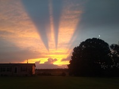

I have always enjoyed traveling and taking photos. I have countless photos, unfortunately I do not have them all uploaded to this pc. So the following are just random pictures I selected. If anyone has in tips on catching a good shot, please share with me. Or if you have some pictures you have taken and would like to share, I would love to see them.
A nice sunset I caught from a friends yard, I loved the rays of light breaking through the clouds, picture doesn't do it justice.

Picture of a spider that had spun his web on the carport. I zoomed in close and was surprised to see the clown face looking back at me. lol